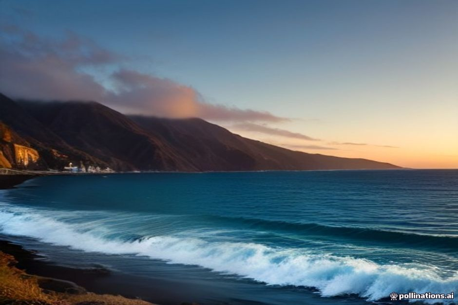
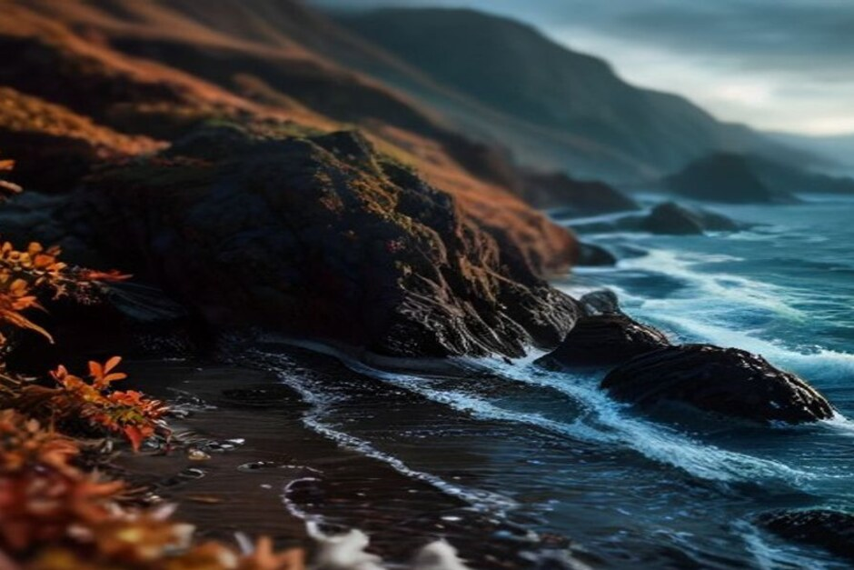

Vous hésitez entre Madère en septembre, en octobre ou en novembre ? Bonne nouvelle : l'île reste douce, et la mer y est même plus chaude qu'en plein été. Voici, mois par mois, la météo et la température à attendre, ce qu'il faut mettre dans la valise et le mois que nous choisirions selon ce que vous cherchez.
Madère en automne : l'essentiel en quelques lignes
- Septembre : environ 25°C à Funchal en journée, une mer autour de 24°C, le meilleur mois pour se baigner.
- Octobre : environ 23°C, une mer encore proche de 23°C, un temps globalement sec et ensoleillé sur la côte sud.
- Novembre : environ 20°C, une mer qui redescend vers 18 ou 19°C en fin de mois, et les premières perturbations atlantiques.
Les nuits descendent rarement sous les 15°C, même en fin de saison. Madère est en plein Atlantique, à la hauteur du Maroc : son automne ressemble davantage à une fin d'été qui s'étire qu'à un vrai changement de saison.
Météo et température à Madère en octobre
Octobre est le mois que beaucoup d'habitués préfèrent. Il fait environ 23°C l'après-midi à Funchal, l'air est un peu moins lourd qu'en septembre et les journées de randonnée sont plus agréables. Le temps reste globalement sec et ensoleillé sur la côte sud, dans le prolongement de l'été plutôt qu'en rupture avec lui.
La mer, elle, se maintient autour de 23°C pendant tout le mois. C'est largement assez pour nager sans se faire prier, même si l'on ressort plus vite de l'eau qu'en septembre.
Un détail pratique pour les familles : octobre coïncide avec les vacances de la Toussaint en France. Si vous voyagez à ces dates, réservez vos activités un peu en avance. Et n'oubliez pas que Madère vit à l'heure de Lisbonne, soit une heure de moins qu'en France.

Madère en septembre : la mer la plus chaude de l'année
C'est le paradoxe que l'on explique souvent aux visiteurs : l'Atlantique met tout l'été à se réchauffer, et il atteint donc son maximum en septembre, autour de 24°C. Avec environ 25°C dans l'air à Funchal, c'est sans doute le meilleur mois de l'année pour se baigner sur l'île.
La foule du pic de juillet et août a déjà nettement diminué. Les points de vue, les restaurants et les créneaux en bateau sont plus faciles à obtenir, sans devoir s'y prendre des semaines à l'avance. Fin septembre, les vendanges s'accompagnent de fêtes du vin autour de Câmara de Lobos et d'Estreito de Câmara de Lobos : foulage, dégustations et musique, dans la tradition du vin de Madère.
Météo à Madère en novembre : doux, mais plus incertain
En novembre, il faut compter sur environ 20°C en journée. C'est encore doux, et bien plus clément que ce que vous laisserez à Paris, Bruxelles ou Genève. En début de mois, la baignade reste possible pour les frileux qui s'y préparent. En fin de mois, la mer redescend vers 18 ou 19°C.
Le vrai changement, c'est la pluie. Les premières perturbations atlantiques de la saison humide arrivent à partir de la fin octobre et surtout en novembre. Les averses restent le plus souvent courtes, loin de la pluie grise qui peut durer toute la journée en plein hiver. Le risque est simplement plus élevé : prévoyez un plan B pour une journée sur trois ou quatre, et vérifiez les prévisions la veille.
Novembre a pour lui les prix plus bas et des sentiers beaucoup plus calmes. Si vous voulez surtout marcher, visiter et manger, c'est un bon compromis. Si la baignade est au cœur de votre séjour, préférez septembre ou octobre.
Et la pluie, côte sud contre côte nord ?
La règle de l'île vaut en automne comme en toute saison : la côte sud, autour de Funchal et de Câmara de Lobos, est plus sèche et plus ensoleillée que la côte nord (Santana, São Vicente, Porto Moniz). Sur une journée annoncée incertaine, gardez le nord pour le jour qui s'annonce le plus dégagé et profitez du sud le reste du temps.
Que mettre dans la valise ?
Des vêtements d'été, plus une couche chaude. Maillot de bain et tenues légères suffisent la plupart des jours jusqu'en octobre. Ajoutez un pull pour les soirées, une veste de pluie pliable surtout si vous venez en novembre, et un vêtement plus chaud pour la montagne : le Pico do Arieiro et le Pico Ruivo se rafraîchissent bien avant la côte quand la saison tourne.
Pour les levadas, des chaussures qui accrochent sont indispensables. Après la moindre pluie, les chemins deviennent glissants très vite.
Que faire à Madère en automne ?
Octobre ajoute une semaine de festival en plein air répartie sur plusieurs communes : randonnées guidées, canyoning, VTT et trail, dans le calme de l'arrière-saison. S'y ajoutent les fêtes de village et les marchés qui se poursuivent toute la saison. Rien de tout cela ne demande de s'organiser à l'avance : c'est un bonus sur un séjour construit autour de la mer et de la montagne.
Pour la mer, l'automne est une très bonne saison. Avec Chifbay, l'excursion à la journée part de la Marina do Funchal (ponton C) à 10h00 ou à 14h00. Comptez 2 h 30 jusqu'à Ribeira Brava pour 500 €, ou 3 h jusqu'à Ponta do Sol pour 600 €, avec Câmara de Lobos, le Cabo Girão, puis une baignade et des paddles à la Fajã dos Padres. Les arrêts baignade gardent tout leur intérêt jusqu'à fin octobre, sans la mise en garde « fraîche » que l'on donnerait en janvier.
Si vous préférez la fin de journée, la sortie coucher de soleil part 1 h 15 avant le coucher du soleil, toute l'année : 2 h jusqu'au Cabo Girão pour 400 €, ou 2 h 30 jusqu'à Ribeira Brava pour 500 €, sans arrêt baignade. Ces prix valent pour le bateau entier (5 personnes au maximum), jamais par personne, et l'annulation est gratuite jusqu'à 24 h avant le départ. À bord : repas et boissons, vidéo 360° Insta360, images de drone si la météo le permet et photos prises avec un vrai appareil. Pour comparer les formules, voyez notre page sur les meilleures sorties en bateau à Madère, ou lisez ce qu'en disent nos clients.
Septembre, octobre ou novembre : quel mois choisir ?
- Pour la baignade et le bateau : septembre, puis octobre. Eau à 24 puis 23°C, air doux, et moins de monde qu'en août.
- Pour la randonnée : octobre. Un peu moins chaud en altitude, des sentiers plus agréables, et le festival de plein air.
- Pour les petits budgets et le calme : novembre, à condition d'accepter un risque de pluie plus élevé.
Si votre séjour est construit autour du temps passé sur l'eau, septembre et octobre sont difficiles à battre : une mer plus chaude qu'en hiver, plus de disponibilité qu'en août et une belle longueur de jour pour une sortie en bateau l'après-midi le long de la côte.
L'été attire la foule. L'automne, lui, garde discrètement la plus belle eau de l'année.
Quelle que soit la semaine de votre arrivée, consultez les prévisions un jour ou deux avant de partir plutôt que de vous fier à une moyenne saisonnière. Avec les microclimats de Madère, la différence entre une matinée grise et une belle matinée peut tenir à la côte où vous vous trouvez. Pour les détails de l'organisation sur place, notre page infos pratiques répond aux questions habituelles, et le Journal regroupe nos autres guides.
